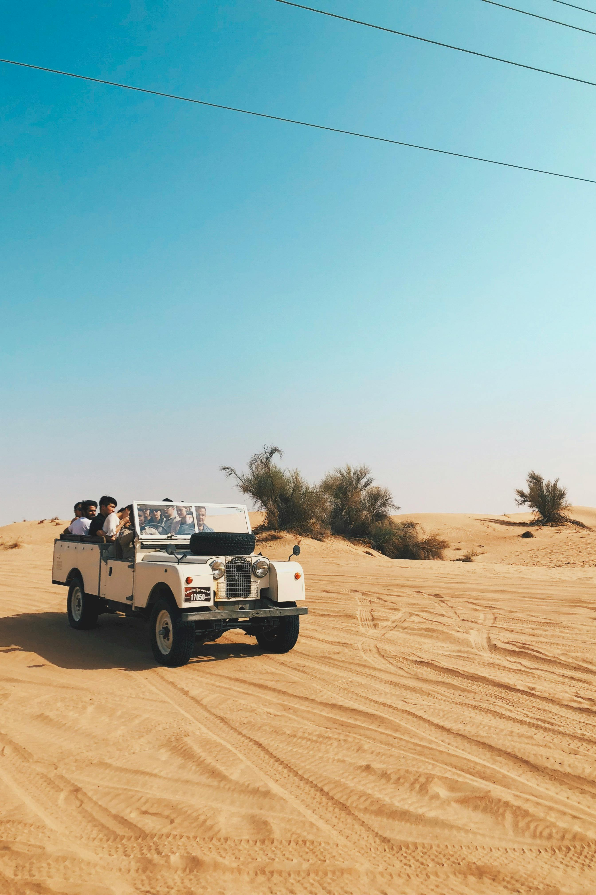

The PNW
The pacific northwest consists of Washington, Oregon, and some of Idaho, however
we will just be focusing on Washington and Oregon.
Highlighted in blue is the area which BLM (Bureau of Land Management) recognizes as OHV (off highway vehicle) friendly and accessible.
These are usually commonly known riding areas that host many riders each year.
This highlighted area is not inclusive to private riding areas, tracks, or areas unknown to BLM.
Trail and Large Areas
Now the highlighted area represents trails recognized and catalogued by BLM.
This is a more accurate representation of the ridable area in the PNW.
Lots to Choose From
As we can see, there are lots of trails in the area. Oregon and Washingon are host to a bounty of complex
trail systems and riding areas, from tight wooded trails, to open sand dunes.
Travel
One need not travel far to gain access to offroad area. For someone seeking diversity in their offroad adventures,
it does not get much better than the PNW.
Dunefest
One of my personal favorite riding areas, the Winchester Bay sand dunes, host a yearly event called
Dunefest, where riders come from accross the country for a chance to compete in drag racing, hill climbs,
and other events.

There's plenty to explore, so get out there!